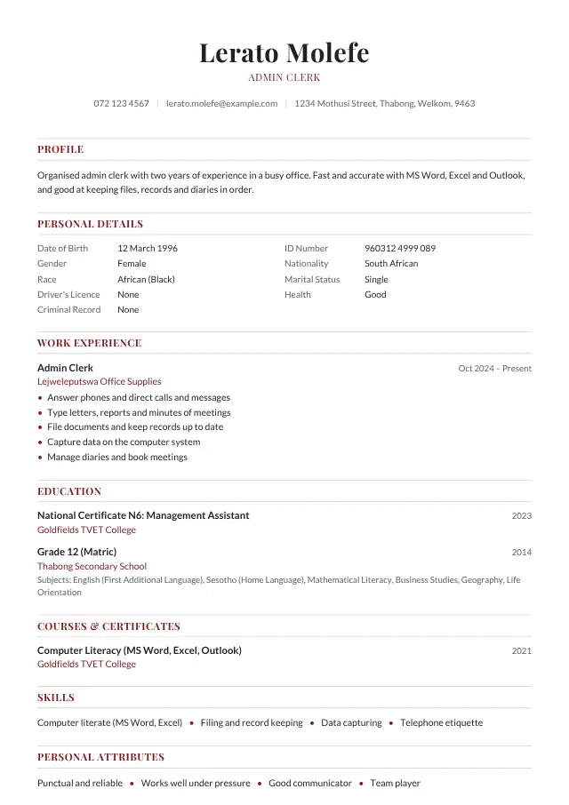

Admin Clerk CV example
A Admin Clerk CV for South African employers: what to write, the duties and skills to list, a cover letter, tips and interview questions.
Updated 13 November 2026 · By Tumelo Vincent Tau

1. An example profile
A short profile at the top of your CV says who you are and what work you want. Change it to fit your own experience:
2. Duties to list
Under each job like this in your work experience, list three to five of the duties you really did:
- Answer phones and direct calls and messages
- Type letters, reports and minutes of meetings
- File documents and keep records up to date
- Capture data on the computer system
- Manage diaries and book meetings
- Order and control office stationery
- Receive and send post, emails and couriers
3. Skills and certificates
Skills employers look for in this job:
- Computer literate (MS Word, Excel)
- Filing and record keeping
- Data capturing
- Telephone etiquette
Also list, if you have them:
- Computer skills: MS Word, Excel, Outlook and any systems you used
- Typing speed, if you know it
- Office administration qualification or short course
4. Tips for Admin Clerk jobs
- Name the programs you can use. "Computer literate" alone says very little; "Excel: formulas, filters and reports" says a lot.
- Give examples of what you managed: filing systems, minutes of meetings, orders, invoices or a manager's diary.
- Government admin posts need a Z83 form with your CV.
5. An example cover letter
Send a short cover letter with your CV, naming the post and the reference number from the advert:
Dear Hiring Manager
Re: Application for the post of Admin Clerk
I would like to apply for the post of Admin Clerk, as advertised. Please find my CV attached.
At a property company I handled filing, typed letters and quotes, captured invoices and kept the manager's diary. I am fast and accurate on Word, Excel and Outlook, and I like an office where everything can be found quickly.
I am available for an interview at any time and can be reached on 072 123 4567. Thank you for considering my application.
Yours faithfully
Lerato Molefe
More help: how to write a cover letter, a CV with no work experience and job interview tips.
6. Interview questions for Admin Clerk jobs
If your CV gets you an interview, expect questions like these. Think about your answers before the day:
- Which computer programs do you use, and for what?
- Name Word, Excel, email or any system you used, with one real task for each.
- How do you keep track of many tasks and deadlines?
- Describe your list, diary or filing system and how you decide what comes first.
- How do you handle confidential documents?
- Say that you lock them away, share them only with the right people and never discuss them.